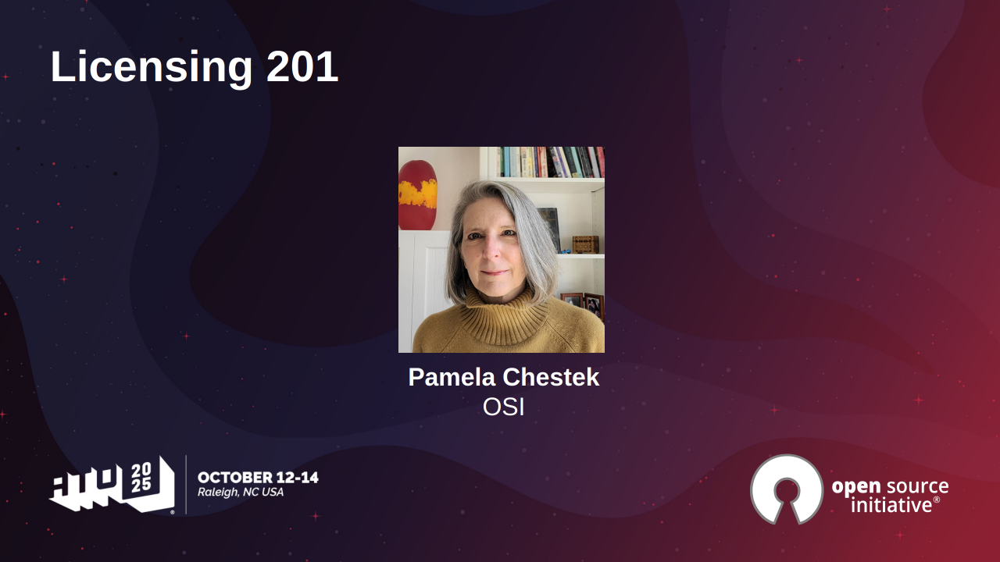

State of the Source at ATO 2025: Licensing 201
引言
當「開放原始碼」逐漸成為軟體開發的日常語言，我們是否真的理解它背後的法律結構與價值選擇？在 AI 技術快速演進、企業與政策力量深度介入的今天，授權條款早已不只是附在專案後方的法律文件，而是深刻影響社群合作方式、技術流通速度，甚至創新能否持續發生的關鍵。
本篇文章整理自 Open Source Initiative（OSI）於 All Things Open 大會中的進階分享，從授權審查實務、近年趨勢，到 AI 與開放原始碼的交會點，帶領讀者重新檢視：在不斷變動的技術環境中，「什麼才是真正的開放」。 文章翻譯自 《State of the Source at ATO 2025: Licensing 201 – Open Source Initiative》 CC-BY 4.0
在 2025/10，開放原始碼促進會（Open Source Initiative1，OSI） 在 All Things Open 大會中主辦了 State of the Source 議程，旨在讓開發者與正在形塑我們生態系的重要政策議題建立連結。OSI 榮譽董事會成員 Pamela Chestek2 以「Licensing 201」為該專題揭開序幕，深入且實務地探討授權條款是如何獲得核准的，以及為何做出正確的授權選擇對社群生態至關重要。
Licensing 201
這場關鍵的議程是一堂進階入門課，深入介紹開放原始碼授權條款、為何值得關注，以及哪些授權最常被使用與其原因。內容也涵蓋對 OSI 授權審核流程的觀察，包括依據《開放原始碼定義》來評估與核准新授權時，哪些角色會參與其中，以及過去五年內獲得核准的授權有哪些。討論主題還包括所面臨的挑戰、成功經驗、最佳實務、營運政策，以及相關資源。

- 影片：https://opensource.org/blog/state-of-the-source-at-ato-2025-licensing-201
- 簡報：https://opensource.org/wp-content/uploads/2025/10/Open-Source-201-ATO-2025.pdf
影片摘要
Pamela Chestek
好的，如同 Deb 剛才提到的，非常感謝這樣的介紹。先簡單介紹一下我自己：我曾是開放原始碼促進會（Open Source Initiative，OSI）的董事會成員，目前已卸任，現在是一名私人執業的律師，專注於商標以及開放原始碼軟體授權。我目前住在加州，之前曾住在羅利（Raleigh），所以這次能回到這裡造訪，感覺特別親切。
我們將這場議程命名為 「Open Source 201」，是因為我們假設在座各位對開放原始碼授權已經有相當程度的理解——也就是說，這不是 101 的入門課。不過，我們仍會先做一個簡短的複習，確保大家對基本概念都有共同的認知。
議程
我們將先快速回顧相關術語與基本概念，接著討論目前開放原始碼授權的現況——包括近期核准的一些授權條款、當前面臨的議題，以及如 AI 授權 等新興主題。我也會說明 授權審查流程，介紹其運作方式，以及如果你希望自己的授權獲得 OSI 核准，可以預期會經歷哪些步驟。
開放原始碼定義重點回顧
以下是《開放原始碼定義》的十項要素。你不需要把每一條都背起來！我自己也沒有。不過，在審查授權條款時，有三項特別常被拿出來討論，也是最容易產生問題的地方：
- 未充分授予衍生作品的權利
- 對特定個人、團體或使用領域有所歧視
- 對其他軟體施加限制
舉例來說：任何寫明「僅限非商業用途（Non-commercial use only）」的授權，都不可能獲得開放原始碼促進會（OSI）的核准，因為這會歧視商業使用者，違反了《開放原始碼定義》。
基本名詞說明
我們先來看看幾個關鍵術語。
Copyleft（著作傳承）
這是許多開放原始碼授權背後的核心理念。一般來說，授權可分為兩大類：寬鬆式（permissive） 與著作傳承式（copyleft）。
- 寬鬆式授權（Permissive licenses）：幾乎允許你對軟體做任何事情。
- 著作傳承式授權（Copyleft licenses）：會附加一個條件、如果你修改軟體，或將其與其他軟體結合，你的修改後作品也必須以相同的授權條款散布。
這是一種確保改進成果能持續回饋給所有人的機制，體現了「水漲船高、人人受益」的理念。
BSD 授權（BSD License）
即 Berkeley Software Distribution 授權，是最早期的開放原始碼授權之一，屬於非常寬鬆的類型。由於部分條款隨著時間被移除，因此存在多種版本。雖然文字表述較為老派，但至今仍被廣泛認可與使用。
模型權重（Model Weights）
這是與 AI 相關的較新名詞。模型權重是指指派給 AI 模型中各個節點的數值，用來決定模型如何處理資訊並產生輸出。調整這些權重，會改變模型的行為表現。
防禦性終止條款（Defensive Termination）
這是一種出現在較新授權中的條款，內容是：如果你使用了這套軟體，卻又對他人提起專利侵權訴訟，你所取得的授權將會自動終止。其目的是在開放原始碼社群中，抑制專利訴訟的發生。
開放原始碼授權的現況
回顧我們近期審查過的一些授權條款，其實相當有意思。
根據 《State of Open Source Report》，在 2025 年，人們使用開放原始碼的首要原因是「沒有授權費用」。而在 2023 年，排名第一的原因是「功能性」，但在 2024～2025 年之間，這個排序出現了翻轉。
目前在支援面臨的主要挑戰包括：
- 更新與修補（updates and patches）
- 符合資安與合規政策的要求
- 維護已達生命週期終止（EOL）的版本
近期獲得核准的授權條款
以下是一些近期由 OSI 核准的授權，多半屬於較舊或高度專用的類型：
- Los Alamos National Labs BSD-3 變體版3
- CDDL 1.14
- OSC License 1.1（德文版）：此授權是為德國索林根（Solingen）市所設計。過去長期存在一個疑問：MIT 授權中的責任限制條款，是否能在德國法律下成立。這份授權正是為了解決這項顧慮而制定。
- Blue Oak Model License 1.0.05：大約五年前制定，近期才送交並獲得核准。雖然引發過一些爭議，但仍是有效且符合開放原始碼定義的授權。
撰寫一份好的授權條款極其困難。一旦正式發布，並且已有軟體採用該授權釋出後，就幾乎不可能再輕易修改。正因如此，審查流程才會如此嚴謹。參與 OSI 授權審查的評審者，是我合作過最優秀的合約分析專家之一，他們會找出漏洞、邊緣案例，並確保授權真正符合開放原始碼的核心原則。
審查中的授權與已撤回的授權
審查中
- ModelGo 系列授權：專為 AI 模型所設計。這些授權目前已多次重寫，力求內容周延正確。由於 AI 系統與傳統軟體差異極大，AI 授權格外複雜，必須使用非常精確的法律用語。
已撤回的授權
- MGB 1.0 License：由麻州總醫院布里根體系（Massachusetts General Brigham Hospital）提出。他們需要一套適用於醫療領域、包含特殊責任免除條款的授權，但最終無法完成一個可行的版本。
- PPPL BSD-3 License：內容與既有授權重複，因此被撤回。
- Irrevocable MIT License：試圖防止重新授權或移除原始碼儲存庫，但納入了一些有問題的條款（例如要求永久託管），在原始設計下並不可行。
大多數提交者的出發點都是善意的（希望強化開放原始碼生態系）但要將這些目標轉化為嚴謹、可行的法律文字，確實相當困難。
開放原始碼授權的主要挑戰
- 複雜性：現代的程式碼基礎往往使用成千上萬個第三方元件，通常是從 npm、PyPI、RubyGems 等套件庫引入。這些元件可能同時帶來資安風險。
- 署名與標示（Attribution）：每一種開放原始碼授權都要求標示著作權聲明，並附上授權條款全文。要人工追蹤成千上萬個相依套件，幾乎是不可能的任務。
- 授權相容性（License Compatibility）：這是一個長期存在的問題，核心疑問在於：你是否能同時遵守所有適用的授權條款？
舉例來說，GPLv2 與 GPLv3 彼此不相容，你無法將分別採用這兩種授權的軟體合併，因為每一種授權都要求整體作品必須依照自己的條款來散布。根據自由軟體基金會（FSF）的觀點，GPLv2 與 Apache License 之間也存在同樣的問題。
在美國，這類議題尚未有明確的法院判決定案；社群多半是依賴共同形成的慣例與解讀來運作。
法律發展動態
其中一個重要案件是 Software Freedom Conservancy（SFC）訴 Vizio6。
SFC 指控 Vizio 在其電視產品中使用了 GPLv2 與 LGPLv2 元件，卻未依規定提供對應的原始碼。此案的特殊之處在於，SFC 是以電視購買者的身分提起訴訟，而非著作權人，主張自己是 GPL 授權條款下的第三方受益人。
SFC 的訴求僅是要求提供原始碼，並未請求損害賠償。該案件預計將於 2026 年 1 月 進入審理階段。若 SFC 勝訴，可能會大幅擴張「誰有資格」來執行與主張開放原始碼授權的範圍。
AI 與開放原始碼授權
AI 帶來了全新的挑戰。開放原始碼促進會（OSI）近期對 「開放原始碼 AI（Open Source AI7）」 做出定義，將其界定為一個 AI「系統」，而「系統」這個概念是關鍵，必須在授權條款下提供使用、研究、修改與分享的自由。
不過，OSI 強調，這些自由必須適用於整個系統，而不只是模型權重或零散的程式碼片段。現今有許多組織所釋出的所謂「開放模型（open models）」，僅分享參數，卻未提供訓練資料或程式碼，這並不符合 OSI 的定義。
要符合「開放原始碼 AI」的標準，必須滿足以下條件：
- 完整的系統必須可取得
- 需提供足夠詳盡的資料資訊，讓他人能重建該系統
- 程式碼必須採用 OSI 核准的授權
- 模型參數必須在符合 OSI 規範的條款下分享
使用開放原始碼授權是必要條件，但並非充分條件，還必須提供足夠的透明度，讓他人能夠重製或修改整個系統。
其他趨勢與挑戰
從更宏觀的角度來看，我們也看到一些試圖為特定目標而重新塑造開放原始碼的作法：
- 倫理原始碼授權（Ethical Source Licenses） 與負責任 AI（RAIL）授權：這類授權試圖限制被認為有害或不道德的用途（例如軍事、醫療或核能應用）。雖然出發點良善，但因為限制了使用領域，違反了《開放原始碼定義》，同時也可能將法律責任轉嫁給最終使用者。
- 商業使用限制（例如 Meta 的 Llama 授權）：這類條款重新引入「非商業用途」的限制，從根本上就與開放原始碼的核心原則不相容。
儘管面臨這些挑戰，OSI 仍持續強調：開放原始碼授權必須保持真正的開放性、不歧視任何使用者或用途、具備高度透明性，並且能被任何人自由再利用。
授權審查的考量重點
在審查授權條款時，OSI 主要會關注以下幾個面向：
- 任何人都能重複使用，而不僅限於授權制定者本人
- 不賦予原作者任何特殊特權
- 文字清楚且精確、法律文件必須用語嚴謹
- 在實務上必須可被遵循與遵守
- 該授權必須填補現有授權未涵蓋的真實需求，而非重複造輪子
由於人類的創意無窮無盡，OSI 不可能列舉出所有不可接受的條款，但其核心判斷原則其實很簡單：這份授權，是促進、還是阻礙開放原始碼軟體的採用與使用？
總結與省思
從這場「Open Source 201」的分享可以看出，開放原始碼早已不只是「免費使用程式碼」這麼單純，而是一套牽涉法律、社群治理、商業模式與技術演進的完整體系。無論是授權相容性的複雜性、AI 帶來的全新挑戰，還是各種出於善意卻可能背離開放原則的授權嘗試，都提醒我們：開放原始碼的核心價值在於不歧視、可重用，以及讓所有人都能站在同樣的起跑點上創新。
對開發者與組織而言，選擇授權並非形式問題，而是對社群未來的承諾；一個設計不良的授權，可能在無意間阻礙合作、增加法律風險，甚至削弱整個生態系的健康與平衡。特別是在 AI 時代，只釋出部分成果卻自稱「開放」，已不足以回應社群對透明性與可重現性的期待。最終，這篇文章所傳達的關鍵訊息是：真正的開放，不只是技術選擇，而是一種長期、需要自我節制與共同維護的價值判斷。
-
開放原始碼促進會（Open Source Initiative，縮寫：OSI），又譯作開放原始碼組織，是一個旨在推動開源軟體發展的非盈利組織。 https://opensource.org/ ↩
-
Pamela Chestek 於 2022/04 - 2025/03 為 OSI 董事會成員（提名單位：GNOME 基金會）。Pamela 為知名且備受尊敬的開放原始碼律師，自 2008 年起投入開放原始碼領域，曾任職於 Red Hat，後成立 Chestek Legal 執業。她於 2019 年當選開放原始碼促進會（OSI）董事，並擔任授權委員會主席，協助完善授權審查流程，並推動 OSI 組織治理的重要轉型。 https://opensource.org/board-member/pamela-chestek-2 ↩
-
此案由 Adam L. Pettinger 於 2024 年 6 月 26 日提交，並於 2024 年 9 月 20 日經董事會會議紀錄確認核准。 https://opensource.org/license/los-alamos-national-labs-bsd-3-variant ↩
-
此 1.1 版於 2025 年 5 月 2 日由 Brian Warner 提交，並於 2025 年 7 月 18 日依董事會會議紀錄核准，SPDX 簡短識別碼為 CDDL-1.1。 https://opensource.org/license/cddl-1-1 ↩
-
Blue Oak Model License 的核心精神在於以極度寬鬆的授權方式，最大化軟體的使用與再利用自由，同時透過明確的免責與專利條款，降低貢獻者的法律風險，促進實務上的可行與長期信任。 https://blueoakcouncil.org/license/1.0.0 ↩
-
Court Case: Software Freedom Conservancy v. Vizio Inc. Location: California, Court Type: Orange County Superior Court, Status: Ongoing, Last Update: July 15, 2025, Trial Date: January 12, 2026 ↩
-
THE OPEN SOURCE AI DEFINITION 1.0, https://opensource.org/ai ↩